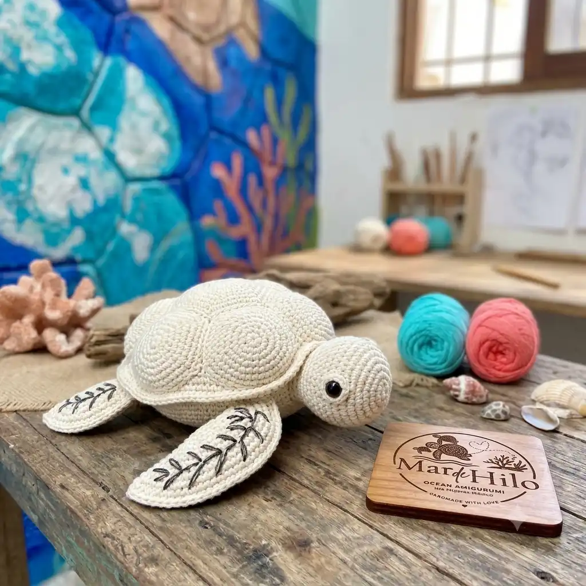
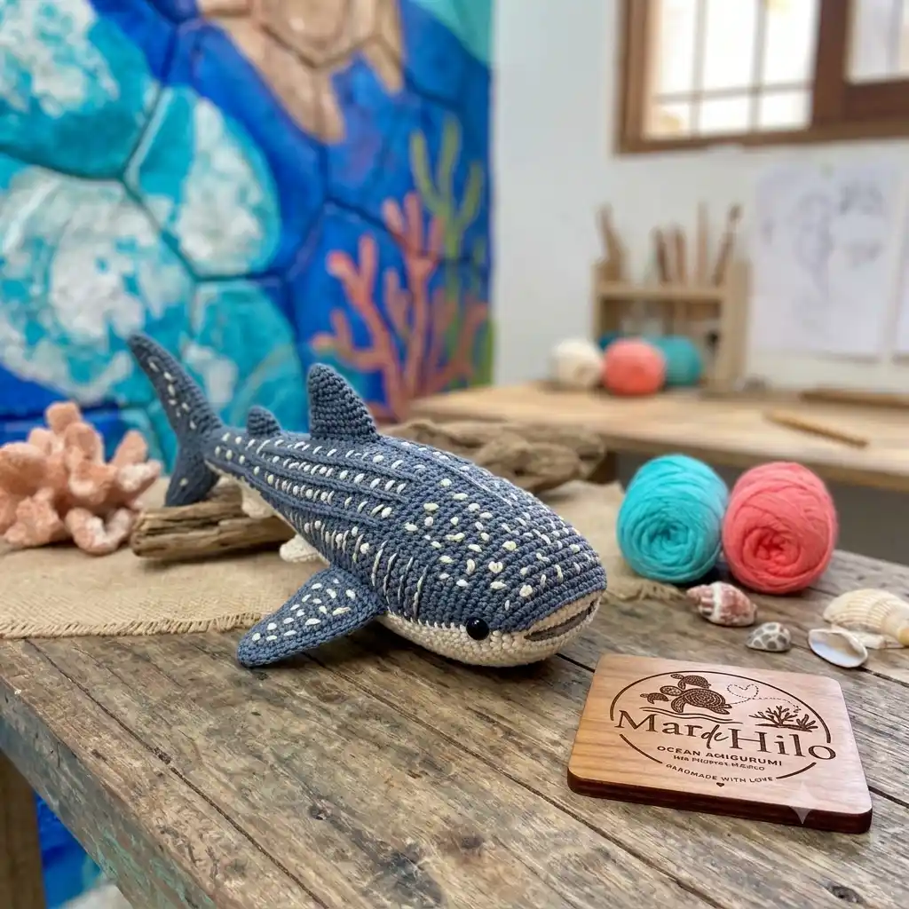

Luna, la Tortuga
Inspirada en las tortugas que anidan cada año en Isla Mujeres. Representa la paciencia del océano.
Ver DetallesCada colección es un homenaje a una especie marina específica de Isla Mujeres.

Inspirada en las tortugas que anidan cada año en Isla Mujeres. Representa la paciencia del océano.
Ver Detalles
Un homenaje al tiburón ballena, símbolo sagrado de la isla. Cada punto blanco es colocado a mano.
Ver Detalles